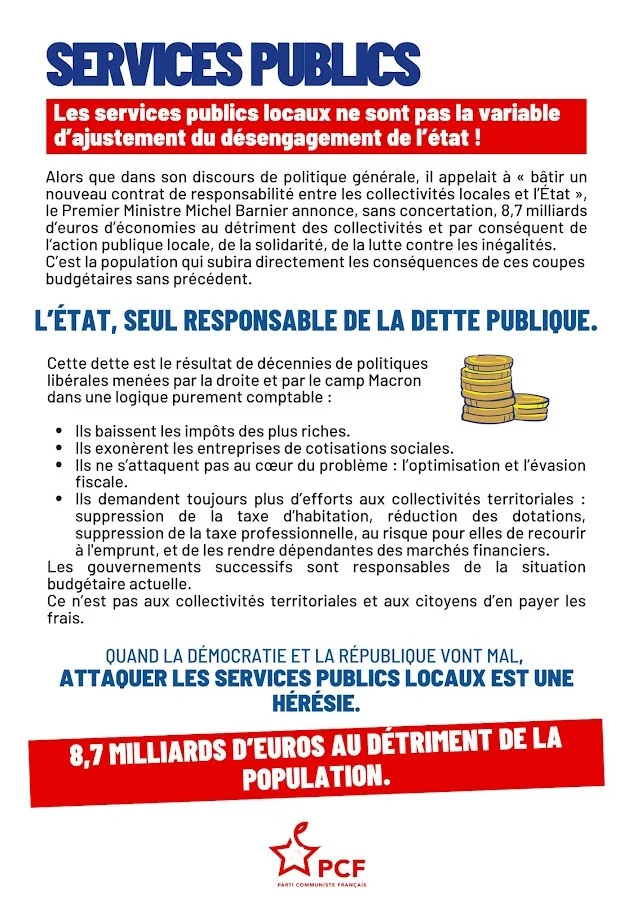
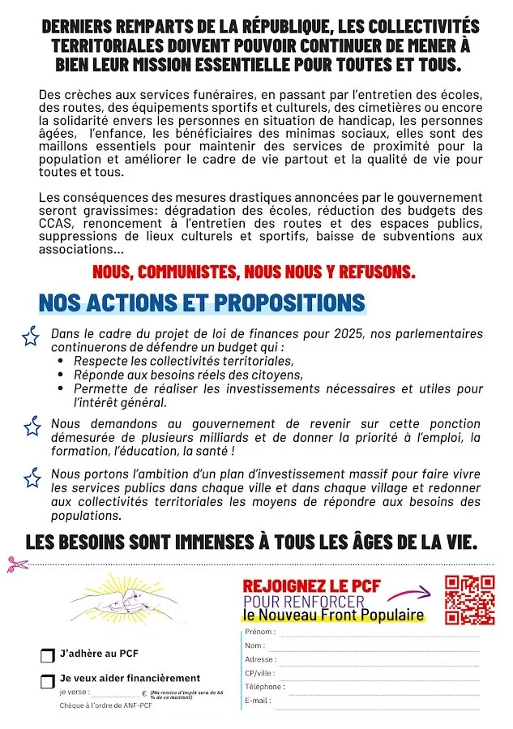

Prise de position
« Les services publics, rempart de la République ! »
Date indiquée par Facebook · 22 novembre 2024
Repères éditoriaux
Nous avons publié les deux pages du tract du PCF sur les conséquences des coupes pour les collectivités et les services publics. Ses revendications sont présentées dans le document joint.
Texte conservé avec la publication
Les services publics, rempart de la République !
Non à la casse sociale !
#DeuxSèvres #servicepublic


Sources
Archive rouge · export Facebook · AR-0002-FB-01239
À lire aussi · À Niort, la fonction publique mobilisée le 5 décembre